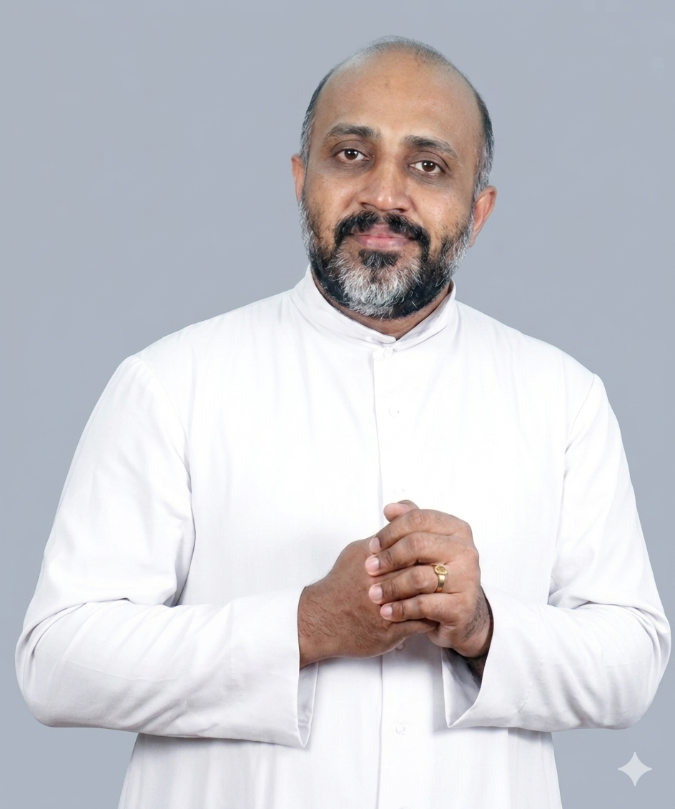

Nurturing Minds,
Healing Hearts
We offer a professional, safe and supportive space to nurture your mental well-being and find peace.
Our Vision
To be the leading beacon of mental health awareness and care in Kerala, fostering a society where emotional well-being is prioritized and accessible to all.
Our Mission
To provide scientifically sound, ethically robust, and deeply compassionate psychological interventions tailored to the unique needs of every individual we serve.
Quality Care From Quality Experts
At DE PAUL COUNSELING CENTRE, we believe that every individual has the inherent potential to overcome psychological hurdles. Led by experienced professionals, our clinic provides a safe, confidential space for self-discovery and healing.
- Evidence-Based Practices
- 100% Confidentiality Guaranteed
- Highly Qualified Professionals
Rooted in
Compassion & Faith
At DE PAUL COUNSELING CENTRE, our work is deeply grounded in the values of Catholic spirituality and pastoral care. We believe that true healing encompasses not just the mind, but also the spirit and soul.
Our spiritual approach complements evidence-based psychological interventions, creating a holistic path to wellness. We honor each individual's faith journey while providing professional, compassionate guidance for life's most challenging moments.
- Spiritually-Informed Care
- Pastoral Guidance & Support
- Holistic Healing Approach
St. Vincent de Paul
Our Heavenly Patron
Specialized Psychological Support
We offer a range of specialized services designed to support different aspects of mental health and personal growth.
Individual Counseling
One-on-one support tailored to your story.
Focusing on helping you process emotions, understand patterns, and build healthier coping mechanisms for anxiety, mood, and self-worth.
Learn MoreParental Counseling
Confident, compassionate parenting support.
Helping navigate behavioral challenges, emotional outbursts, and family transitions with practical tools for both parents and children.
Learn MoreStress Management
Tools to handle daily pressure with ease.
Learning science-backed relaxation strategies, boundary-setting skills, and mindset shifts to restore balance.
Learn MoreFamily Counseling
Healing conversations for the whole family.
Creating a structured space for communication, conflict resolution, and rebuilding trust within the family unit.
Learn MoreDepression Counseling
Gentle support when life feels heavy.
Supporting recovery from low mood through small, realistic steps toward rebuilding hope and connection.
Learn MoreCouple Therapy
Rebuilding connection, respect, and trust.
Improving communication and deepening emotional intimacy in a neutral, supportive environment for partners.
Learn MoreAnxiety Management
From constant worry to calm and clarity.
Combining practical coping techniques with deeper emotional work to manage physical symptoms and racing thoughts.
Learn MoreSpiritual Counseling
Spiritual guidance rooted in Catholic faith.
Experienced counselors offer compassionate spiritual guidance rooted in Catholic spirituality.
A serene and non-judgmental space to explore your faith, emotions, and life challenges, fostering holistic healing and growth.
Meet Our Team
Fr. George Pallickamyalil VC
MSc, Counseling Psychology
Director & Consultant Psychologist
With years of expertise in counseling psychology, Fr. George leads the team with a vision of compassionate care. Expertise in providing comprehensive psychosocial assessments, crisis intervention, and evidence-based therapeutic support within multidisciplinary healthcare settings.
Fr. John
Arolichalil VC
Superior
Pastoral Services Coordinator
Superior of Vincentian House, leads with compassion, overseeing pastoral services like Holy Mass, Adoration, and Confession, nurturing spiritual growth at De Paul Counselling Centre.

Fr. Sonu
Kulathur VC
MA, Psychology
Consultant Psychologist
A seasoned pastoral leader with years of experience in guiding his flock. Known for his empathetic approach to counseling, creating a safe space for people to open up and find solace. His down-to-earth demeanor and genuine care for others make him a trusted confidant.
Alen Jo
MSW, Medical & Psychiatry
Mental Health Consultant
Expertise in providing comprehensive psychosocial assessments, crisis intervention, and evidence-based therapeutic support within multidisciplinary healthcare settings. He brings expertise in counseling addiction, empowering individuals to overcome challenges and achieve wellness through compassionate guidance and support.
Common Questions
Absolutely. Confidentiality is a core ethical pillar of our practice. Your personal information and session details are never shared without your explicit consent.
A standard individual counseling session typically lasts 45 to 60 minutes. First-time consultations may take slightly longer for thorough assessment.
Have another question? Send it directly through Gmail: depaulcounselling@gmail.com
Your Journey to Better Mental Health
Starts Today.
Take the first step towards a healthier, more balanced life. Our team is here to support you every step of the way.